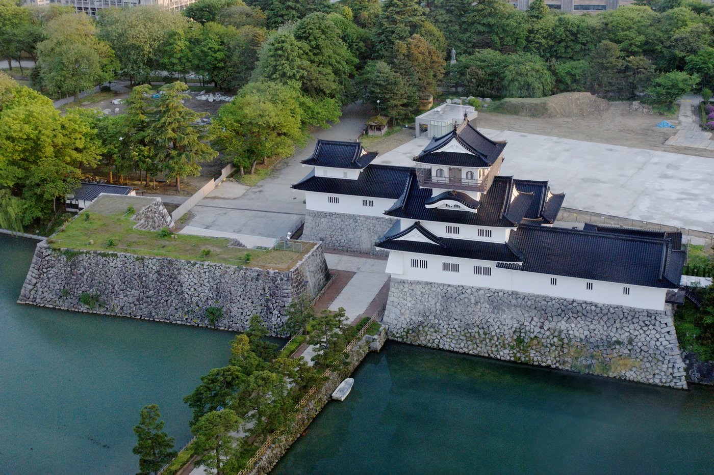
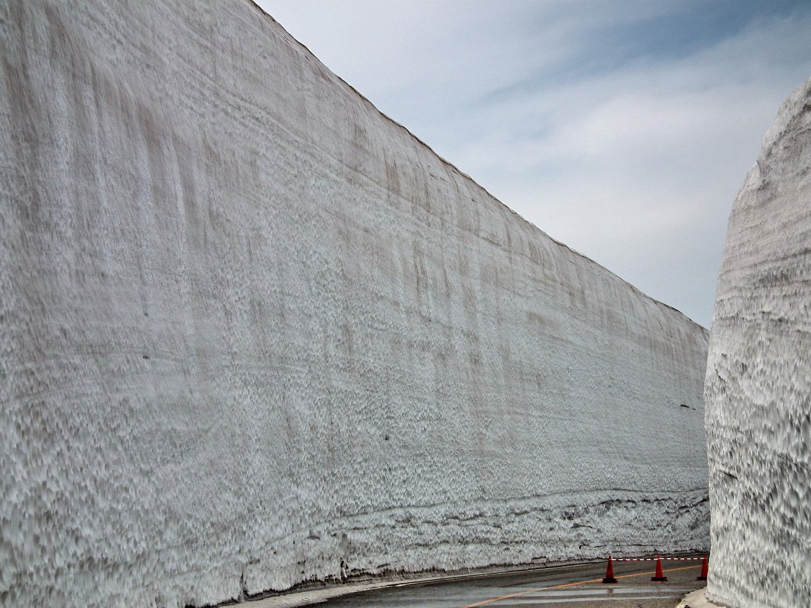
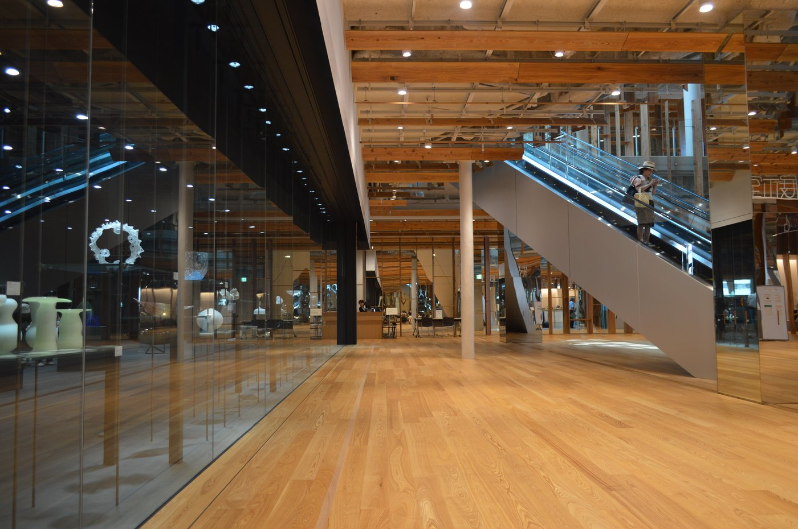

8th International Conference — Toyama, Japan
Tethers in Space 2027
Jointly held with the 36th International Symposium on Space Technology and Science (ISTS 2027)
| July 17–23, 2027 | |
| Toyama International Conference Center, Toyama, Japan | |
| In conjunction with 36th ISTS |
About the Conference
The 8th International Conference on Tethers in Space is a focused forum where researchers working on tether dynamics, control, deployment, and mission applications present and discuss their latest findings in depth. Presented TiS 2027 papers will be eligible for submission to the planned Special Issue of Acta Astronautica.
Key Dates
| Abstract submission opens | September 17, 2026 |
| Abstract submission deadline | December 17, 2026 |
| Paper submission deadline | June 17, 2027 |
| Conference | July 17–23, 2027 |
Co-organized with 36th ISTS
TiS 2027 is held jointly with the 36th International Symposium on Space Technology and Science (ISTS 2027). Registration and logistics follow the joint 36th ISTS process.
Visit 36th ISTS ↗Prof. Hirohisa Kojima
Conference Chair, TiS 2027
Tokyo Metropolitan University
Message from the Chair
On behalf of the organizing committee, it is my great pleasure to welcome you to the 8th International Conference on Tethers in Space (TiS 2027), which will be held at the Toyama International Conference Center in Toyama City, Japan, from July 17 to 23, 2027.
The International Conference on Tethers in Space is a highly unique conference dedicated specifically to research on space tether systems. Our conference will be held jointly with the 36th International Symposium on Space Technology and Science (ISTS), offering a valuable opportunity not only to engage in specialized discussions within the tether community, but also to attend a wide range of presentations across space engineering and science.
Toyama City is a place that is deeply personal to me, as it is where I was born and lived until graduating from high school. Toyama faces the Sea of Japan and is well known for its excellent seafood — among its specialties, masu-no-sushi is particularly famous. In front of the conference venue lies Toyama Castle Park, and the city is also home to the Toyama Glass Art Museum, where visitors can appreciate a variety of colorful glass artworks.
I am truly delighted that we can hold TiS 2027 in such an inspiring environment. We warmly invite you to submit papers presenting your research results.
Read full message on 36th ISTS ↗Discover Toyama

Toyama Castle · 663highland / Wikimedia (CC BY-SA)

Tateyama Snow Walls · lienyuan lee / Wikimedia (CC BY)

Glass Art Museum (Kirari) · Asturio Cantabrio / Wikimedia (CC BY-SA)

Gokayama UNESCO village (Nanto, Toyama) · kai muro / Unsplash